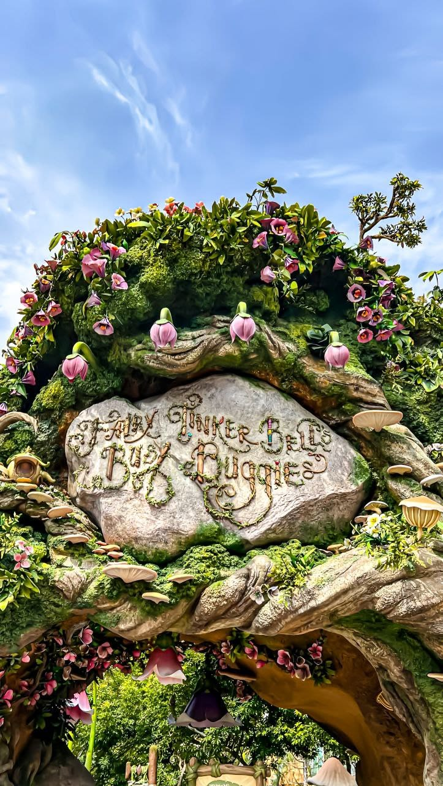

Tokyo Disneyland adalah taman hiburan bertema Disney pertama yang dibangun di luar Amerika Serikat. Resmi dibuka pada tanggal 15 April 1983, taman rekreasi ikonik ini dikelola oleh Oriental Land Company dengan lisensi resmi dari The Walt Disney Company. Terletak di Urayasu, Chiba, Jepang, destinasi impian ini menawarkan pengalaman magis yang memadukan kehangatan budaya keramahan Jepang dengan atmosfer dunia dongeng klasik Disney yang dicintai oleh jutaan pengunjung dari berbagai belahan dunia setiap tahunnya. Sejak pertama kali beroperasi, tempat ini telah menjelma menjadi simbol kebahagiaan universal yang tidak pernah kehilangan daya tarik magisnya bagi anak-anak maupun orang dewasa.
Kompleks megah seluas lebih dari 46 hektar ini terbagi menjadi beberapa area tematik utama yang masing-masing menawarkan keunikan tersendiri. World Bazaar menyambut para pengunjung dengan deretan bangunan bergaya toko-toko Amerika awal abad ke-20 yang dipenuhi pernak-pernik eksklusif. Berjalan sedikit lebih jauh, pengunjung dapat merasakan petualangan seru di Adventureland, menjelajahi misteri masa lalu di Westernland, menikmati keseruan dunia kartun yang penuh warna di Toontown, hingga merasakan kemegahan masa depan di Tomorrowland. Di pusat seluruh area berdiri dengan gagah Cinderella Castle yang menjadi lambang keindahan sekaligus titik sentral dari seluruh keajaiban arsitektur yang ada di dalam kawasan taman hiburan ini.
Selain menawarkan berbagai wahana permainan kelas dunia yang memacu adrenalin maupun wahana santai yang ramah keluarga, Tokyo Disneyland juga terkenal dengan rangkaian pertunjukan langsung dan parade spektakulernya. Parade siang hari yang meriah selalu menampilkan karakter-karakter kesayangan seperti Mickey Mouse, Donald Duck, dan Disney Princess dalam balutan kostum gemerlap diiringi musik yang ceria. Sementara itu, pada malam hari, langit di atas kastil akan diterangi oleh pertunjukan kembang api megah yang berpadu dengan proyeksi cahaya canggih, menciptakan atmosfer malam yang benar-benar romantis dan sulit dilupakan oleh siapapun yang menyaksikannya.
Berwisata ke Tokyo Disneyland bukan sekadar menikmati wahana permainan, melainkan sebuah pengalaman emosional yang menghidupkan kembali memori masa kecil. Perhatian terhadap detail kebersihan, keramahan para staf yang dikenal dengan sebutan Cast Members, serta inovasi wahana baru yang terus dihadirkan, seperti area bertema Beauty and the Beast yang menakjubkan, menjadikan destinasi ini selalu terasa segar di setiap kunjungan. Dengan segala keajaiban, tata kelola profesional, dan atmosfer kebahagiaan yang melingkupinya, Tokyo Disneyland akan terus berdiri kokoh sebagai tempat di mana mimpi-mimpi indah benar-benar menjadi kenyataan bagi setiap jiwa yang datang berkunjung.